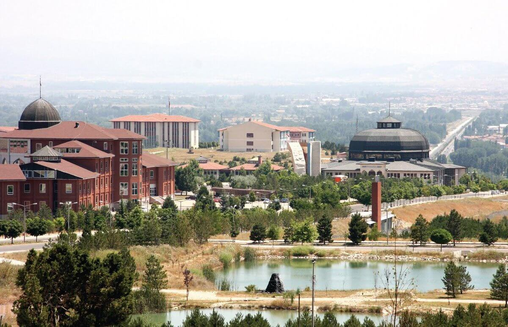
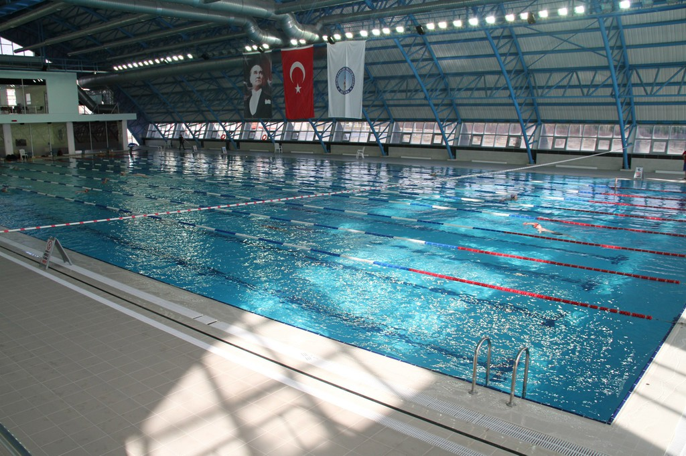
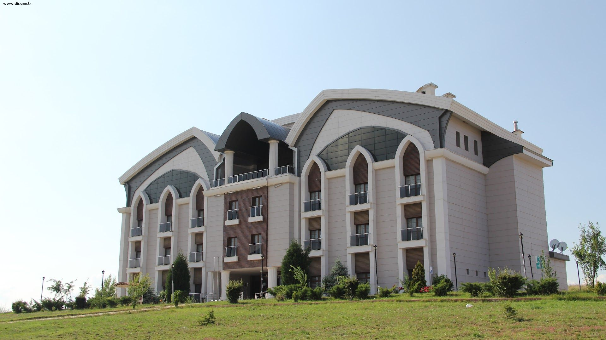
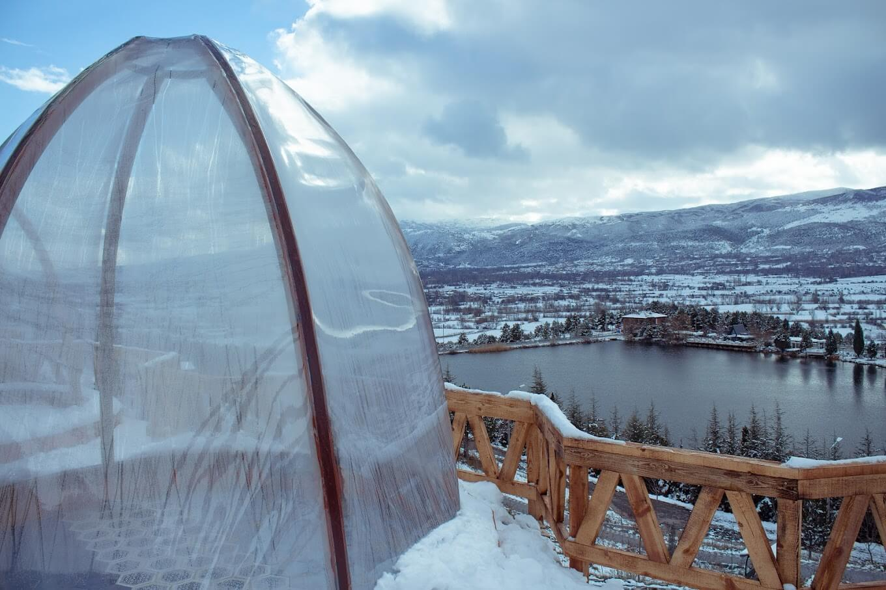
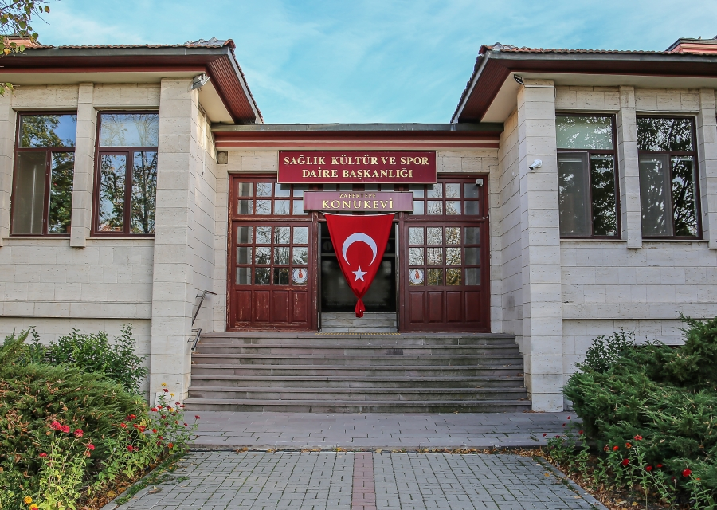

DUMLUPINAR ÜNİVERSİTESİ
Kütahya Dumlupınar Üniversitesi, 1992 yılında 'Kuruluş ve Kurtuluş' mücadelesinin verildiği kentin üniversitesi olarak kurulmuştur. Kütahya 11 merkezinde; Evliya Çelebi, Simav Dr. İbrahim Naci Eren ve Tavşanlı Yerleşkesi olmak üzere üç yerleskeye 8 ilçede de ayrı binalara sahiptir.
Yerleşkeye giriş, yerleşkenin ortasında yer alan iki büyük kule ile yanlara doğru küçülen kuleler ve bu kulelerin arasındakı kemerli girişlerin olduğu taş kapıdan sağlanmaktadır. Giriş kapısının karşısında, kapı ile aynı aksta Rektörlük binası yer almaktadır. Meydanın sağ ve sol tarafında Fen-Edebiyat Fakültesi, Mühendislik Fakültesi ve bu fakültelerin dekanlık ve öğretim binaları bulunmaktadır. Meydanda giriş kapısı ile Rektörlük binasa arasında beş adet havuz yapılmıştır. Havuzlar ile Rektörlük binası arasında Üniversitemizin simgesi olan Atatürk ve Dumlupınar Anıtı bulunmaktadir.
Kütahya Dumlupınar Üniversitesi coğrafi yakınlıkları nedeniyle İstanbul, Ankara, İzmir, Antalya, Konya, Bursa, Eskişehir gibi büyükşehirlerin öğrencilerinin tercihlerinin yoğun olduğu, genç dinamik eğitim kadrosuyla ülkemizin saygın eğitim kurumları arasındadır. Kütahya Dumlupınar Üniversitesi bünyesinde 1 enstitü, 11 fakülte, 1 yüksekokul ve 14 meslek yüksekokulu bulunmaktadır.
BAZI FAKÜLTELER
Eğitim Fakültesi
Fen Bilgisi Öğretmenliği, İlköğretim Matematik Öğretmenliği, Okul Öncesi Öğretmenliği, Sınıf Ögretmenliği, Sosyal Bilgiler Öğretmenliği.
Güzel Sanatlar Fakültesi
Görsel İletişim Tasarımı, Çizgi Film/Animasyon, Resim, Seramik, El Sanatları ve Sinema-Televizyon.
İktisadi ve İdari Bilimler Fakültesi
İşletme (Türkçe), İşletme (İngilizce), İktisat, Kamu Yönetimi, Maliye, Siyaset Bilimi ve Uluslararası İlişkiler, Ekonometri, Uluslararası Ticaret ve Finans.
İslami Bilimler Fakültesi
Akademik Temel İslami Bilimleri, Felsefe ve Din Bilimleri, İslam Tarihi ve Sanatları
Mühendislik Fakültesi
Bilgisayar Mühendisliği, Elektrik-Elektronik Mühendisliği, Endüstri Mühendisliği, İnşaat Mühendisliği, Jeoloji Mühendisliği, Maden Mühendisliği, Makine Mühendisliği, Metalurji ve Malzeme Bilimi.
Spor Bilimleri Fakültesi
Antrenörlük Eğitimi, Beden Eğitimi ve Spor Öğretmenliği, Rekreasyon, Spor Yöneticiliği
ÜNİVERSİTE'DE YAŞAM
Kütahya Dumlupınar Üniversitesi, dinamik bir öğrenci yaşamı ve kapsamlı eğitim ortamı sunan bir kurumdur. Modern ve büyük kampüsü, çeşitli sosyal etkinlikleriyle öğrencilere kapsamlı bir deneyim sunar. Kampüs; öğrenci kulüpleri, spor olanakları ve kültürel etkinliklerle doludur. Ayrıca Kütahya'nın tarihi ve doğal güzellikleri, öğrencilere şehir merkezi dışında keşif fırsatları da sunar. Kasacası Kütahya Dumlupınar Üniversitesi, öğrencilere sadece akademik değil aynı zamanda sosyal ve kültürel bir deneyim de sunan bir üniversitedir.
Büyük Göl
Küçük Göl
Olimpik Havuz
Dumlupınar Konukevi
Seyir Tepesi
Zafertepe Konukevi
ÜNİVERSİTEDE ETKİNLİK
Öğrenci kulüplerinin aktif rol aldığı etkinlikler arasında kültür ve sanat etkinlikleri, spor turnuvaları, konferanslar, paneller ve öğrenci festivalleri yer alıyor. Bu etkinlikler, öğrencilerin farkli disiplinlerdeki ilgi alanlarına hitap ederek onların kişisel gelişimine katkı sağlıyor.
Kültürel etkinlikler arasında tiyatro oyunları, konserler, sergiler ve film gösterimleri öne çıkarken, spor etkinlikleri basketbol, futbol, voleybol gibi birçok branşı içeriyor. Öğrenci kulüplerinin düzenlediği etkinlikler ise öğrencilerin bir araya gelmesini, bilgi ve deneyim paylaşımını teşvik ediyor.
Üniversite, aynı zamanda çeşitli günler ve özel etkinlikler için düzenlenen kutlamalara da ev sahipliği yapıyor. Mezuniyet törenleri, kariyer günleri ve öğrenci projelerinin tanıtımı gibi etkinlikler, öğrencilere geleceğe dair hedeflerini netleştirme ve sektörle bağlantı kurma fırsatı sunuyor.